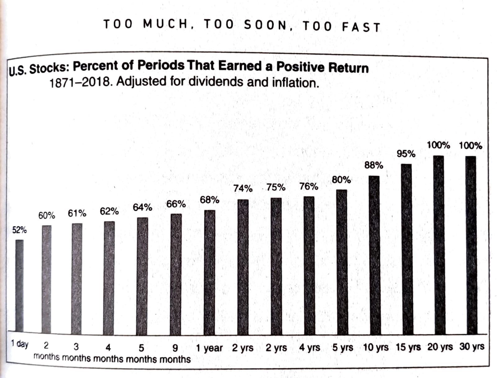
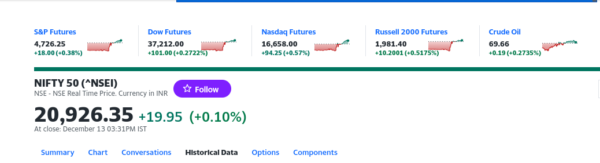
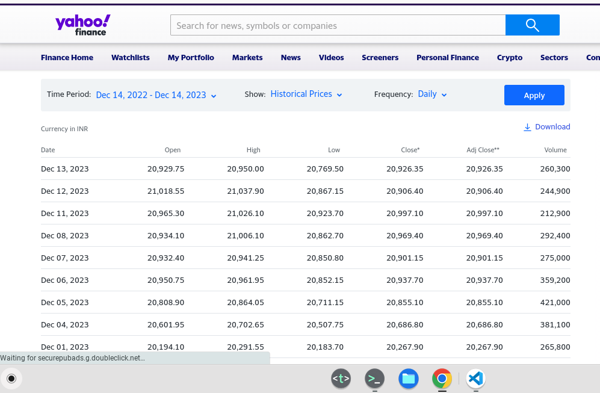
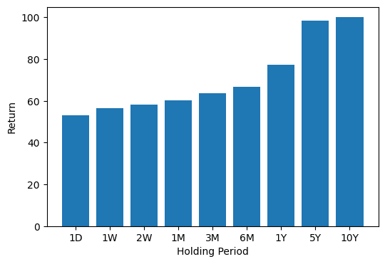
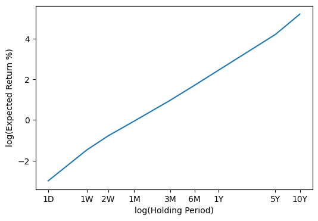

Cover image taken from Unstable Diffusion
Summary: In this post, I explore the question of whether stock trading has better winning odds than gambling on heads or tails in an unbiased coin.
In the past week, I was reading a book called “Same as Ever” by Morgan Housel1. This is the same guy who wrote the bestselling book “Psychology of Money” some years back, so as you can guess, the book is amazing and filled with many profound insights.
In the book, Morgan says that it is human nature to try to guess and predict the future, which is very much uncertain (Well, my entire data science and statistics career is dependent on trying to use data to predict). However, it is much more useful to look for the things that stay the same (e.g. - human greed) instead of trying to predict new things (e.g. - which technology is going to take over the world), which most likely many of us would be wrong about. In one of its chapters, he says that most things that are good take time, if acted too quickly with too much greed, it starts to have terrible effects. In his own words, “A good summary of investing history is that stocks pay a fortune in the long run but seek punitive damages when you demand to be paid sooner.”

Well, he provided this graph for the S&P500 index, which is a standard equity market index in the United States of America, to illustrate his point. I thought that it would be nice to see how it turns out in the case of India.
The counterpart of the S&P500 index for India would be the NIFTY50. It is a volume-weighted average of per unit share prices of the top 50 large-cap stocks (ordered in terms of market cap). It is considered a very good indicator of the overall performance of the stock market.
To get the historical data on the NIFTY50 index of the past few years, I went and checked the Yahoo Finance website2. It looks like this:

Here we need to go to the tab titled “Historical Data”. Then you can select the start and end dates for which you want the historical data, and then hit apply and download the data as CSV.

This looked like a bit of a manual task. So I further explored to figure out if any way I could automate this data collection process. Turns out, there were a few python packages like yfinance3 and yahoo-finance4 out there to collect historical stock prices from the Yahoo Finance website, but all of them are now deprecated and not actively maintained. Well, I dig in further to see their codes present in GitHub and found a link that can provide all the necessary data.
https://query1.finance.yahoo.com/v8/finance/chart/{SYMBOL}?interval=1d&period1={START}&period2={END}
Here, the SYMBOL will be replaced by the symbol of the stock/index, i.e., ^NSEI, and the START and END are the placeholders for the start and end dates of the collected time series data, in the Unix epoch timestamps format. Finally, we can use the requests library in python to programmatically hit this URL and collect the data. Here’s a python function that just does that
# import the necessary libraries as always
import requests
import numpy as np
import pandas as pd
# a function to fetch the historical prices of a symbol
def fetch_symbol_history(symbol, startepoch, endepoch):
url = f"https://query1.finance.yahoo.com/v8/finance/chart/{symbol}?interval=1d&period1={startepoch}&period2={endepoch}"
headers = {
"User-Agent": "Mozilla/5.0 (iPad; CPU OS 11_0 like Mac OS X) AppleWebKit/604.1.34 (KHTML, like Gecko) Version/11.0 Mobile/15A5341f Safari/604.1"
}
response = requests.get(url, headers=headers, timeout=5)
response.raise_for_status()
data = response.json()
Once we have the data from this URL in a JSON format, we can parse this to create a nicely formatted pandas dataframe object, just like how downloading would have provided us. So here’s a bit of code that does this. I simply go inside the result key in the JSON, add the necessary information on the columns as a list, and pass them to the pandas DataFrame() object.
if "chart" in data:
if "error" in data["chart"] and data["chart"]["error"] is not None:
raise ValueError(data["chart"]["error"]["description"])
if "result" in data["chart"] and len(data["chart"]["result"]) > 0:
df = pd.DataFrame({
'timestamp': data['chart']['result'][0]['timestamp'],
'close': data['chart']['result'][0]['indicators']['quote'][0]['close'],
'high': data['chart']['result'][0]['indicators']['quote'][0]['high'],
'low': data['chart']['result'][0]['indicators']['quote'][0]['low'],
'open': data['chart']['result'][0]['indicators']['quote'][0]['open'],
'volume': data['chart']['result'][0]['indicators']['quote'][0]['volume'],
'adjclose': data['chart']['result'][0]['indicators']['adjclose'][0]['adjclose']
})
df['time'] = pd.to_datetime(df['timestamp'], unit = 's') # this converts the epoch times to human readable date format
return df
And here’s how we can get the necessary data with a simple call to this function.
symbol = '^NSEI'
start = int(dt.datetime(2000, 1, 1).timestamp())
end = int(dt.datetime.now().timestamp())
df = fetch_symbol_history(symbol, start, end)
print(df.head())
| timestamp | close | high | low | open | volume | adjclose | time |
|---|---|---|---|---|---|---|---|
| 1190000700 | 4494.649902 | 4549.049805 | 4482.850098 | 4518.450195 | 0.0 | 4494.649902 | 2007-09-17 03:45:00 |
| 1190087100 | 4546.200195 | 4551.799805 | 4481.549805 | 4494.100098 | 0.0 | 4546.200195 | 2007-09-18 03:45:00 |
| 1190173500 | 4732.350098 | 4739.000000 | 4550.250000 | 4550.250000 | 0.0 | 4732.350098 | 2007-09-19 03:45:00 |
| 1190259900 | 4747.549805 | 4760.850098 | 4721.149902 | 4734.850098 | 0.0 | 4747.549805 | 2007-09-20 03:45:00 |
| 1190346300 | 4837.549805 | 4855.700195 | 4733.700195 | 4752.950195 | 0.0 | 4837.549805 | 2007-09-21 03:45:00 |
We start by subsetting the dataframe to pick out only the necessary columns, i.e., the time and the adjusted close price. Since NIFTY50 is an index, there is no corporate action like dividends or stock split associated with it, so the adjusted close price will be the same as the close price.
df2 = df[['time', 'timestamp', 'adjclose']].sort_values('timestamp', ascending = True)
Similar to the scenario described by Morgan, consider an investor who performs a trade for different periods ranging from 1 day to 10 years. That means, the investor buys the index (well, I know you cannot directly buy the index, but think of there is an ETF with no exit load and no expense ratio) at any random point in time, holds it for $d$ days and then sell it on the $d+1$-th day, irrespective of the price. The choice of $d$ will vary from 1 day, 3 days, and even to 10 years.
Here’s a bit of code that calculates the returns according to the formula.
$$\text{Return}_d = \dfrac{(d+1)\text{-th day sell price} - \text{buy price}}{\text{buy price}} \times 100%$$
periods = [1, 5, 10, 22, 63, 126, 252, 5 * 252, 10 * 252] # the range of periods to loop for
for period in periods:
df2[f"Return (period = {period})"] = (df2['adjclose'] - df2['adjclose'].shift(period)) / df2['adjclose'].shift(period)
There are two notes I wanted to point out here.
You might be wondering where we got this 252 value. It is actually the number of days in a year when trading happens. Close to 52 weeks * 5 days a week, minus some national holidays.
Another point is that I explicitly did the calculation of returns (in fractions instead of percentages) by doing the subtraction and division. There is a more direct function present in the pandas library which has the same effect, pct_change5.
Now, for each of these periods, we have multiple returns based on when the investor decided to buy the index. Since it is very difficult to time the market, we shall assume that the investor is equally likely to invest at any possible date, so we will see what proportion of times the investor makes a positive return.
pos_gains = []
for period in periods:
pos_gain = (df2[f"Return (period = {period})"] > 0).sum() / (~df2[f"Return (period = {period})"].isna()).sum()
pos_gains.append(pos_gain)
# some code to plot it nicely
indices = np.arange(len(pos_gains))
plt.rcParams["figure.figsize"]=6,4
plt.bar(indices, np.array(pos_gains) * 100)
plt.xticks(indices, ["1D", "1W", "2W", "1M", "3M", "6M", "1Y", "5Y", "10Y"])
plt.xlabel('Holding Period')
plt.ylabel('Return')
plt.show()

These are the exact proportions of positive returns as a function of the holding period.
That means, trading every day is almost close to tossing an unbiased coin, you have an edge of only 3%. However, if you trade and hold the index long enough, at least about a year, the chances of having a positive return are extremely high, even more than 75%.
Well, now we know that there is a positive return when you trade long enough. But is the return significantly higher than 0? For example, it does not make sense if you hold the index for 1 year only to see it gain in value by merely 1%. The banks would have given you more returns. We need to see at least a 10%-12% gain agreeing with what all the financial gurus around are telling us.
Let’s verify this.
res = [] # a list to hold the data
for period in periods:
res += [(np.round(100 * df2[f"Return (period = {period})"])).describe()]
pd.concat(res, axis = 1)
Here I use the describe method which gives a nice summary of a pandas series object, calculating its mean, median, maximum, minimum, and quartiles.
| Return (period = 1) | Return (period = 5) | Return (period = 10) | Return (period = 22) | Return (period = 63) | Return (period = 126) | Return (period = 252) | Return (period = 1260) | Return (period = 2520) | |
|---|---|---|---|---|---|---|---|---|---|
| count | 3952.00 | 3950.00 | 3944.00 | 3931.00 | 3890.00 | 3827.00 | 3702.00 | 2711.00 | 1473.00 |
| mean | 0.05 | 0.23 | 0.46 | 0.95 | 2.65 | 5.51 | 11.69 | 67.41 | 182.98 |
| std | 1.39 | 3.07 | 4.24 | 6.45 | 11.20 | 16.62 | 22.78 | 29.38 | 63.72 |
| min | -13.00 | -19.00 | -31.00 | -39.00 | -43.00 | -50.00 | -57.00 | -11.00 | 45.00 |
| 25% | -1.00 | -1.00 | -2.00 | -2.00 | -3.00 | -3.00 | 1.00 | 47.00 | 129.00 |
| 50% | -0.00 | 0.00 | 1.00 | 1.00 | 3.00 | 5.00 | 10.00 | 73.00 | 183.00 |
| 75% | 1.00 | 2.00 | 3.00 | 4.00 | 8.00 | 13.00 | 20.00 | 86.00 | 235.00 |
| max | 18.00 | 22.00 | 21.00 | 33.00 | 80.00 | 87.00 | 105.00 | 162.00 | 354.00 |
The values provided here are in percentages. Let’s make a few observations from this 💹.
The mean return is very close to 0 when the holding period is less than a week. So, trading with a very small timeline is nearly based on luck.
If you compare the standard deviation (this is kind of the volatility of the returns) with the mean, it shows that trading for a timeline of anything below 5 years runs a significant risk of breaking even or even making negative returns. For instance, the mean and sd (standard deviation) of the returns for the 3-month holding period are 2% and 11% respectively. Since standard deviation gives you a sense of spread, it means that the actual return is very likely to range between (2-11) = (-7)% to (2 + 11) = 13%, which includes the return of 0% of breaking even.
For a holding period of 10 years, there were no circumstances before where you had a negative return. The minimum return you could have earned is $45\%$. However, if you have been average with your luck you could have brought yourself about $183\%$ return (almost tripled your money), and if you were are luckiest person, a whooping $354\%$ returns 💰 (almost four and half times your money).
If you consider the minimum possible return, note that it decreases from 1 day up to 1 year, and then starts to improve. So one key insight from this is: If you consider yourself a pessimist and think that you have the worst possible luck, it is better to pick one of two options.
Well, some of you may be skeptical and ask if the results are still valid if we adjust the prices for inflation. Well, I did that again, assuming there is a $5\%$ inflation rate.
# assume a 5% inflation rate
inflation_rate = 0.05
# now we calculate the inflation adjusted return
for period in periods:
expected_return = df2['adjclose'].shift(period) * (1 + inflation_rate)**(period / 252)
df2[f"Adjusted Return (period = {period})"] = (df2['adjclose'] - expected_return) / expected_return
These are the exact proportions of positive adjusted returns as a function of the holding period.
and the table of summary statistics is given below:
| Adjusted Return (period = 1) | Adjusted Return (period = 5) | Adjusted Return (period = 10) | Adjusted Return (period = 22) | Adjusted Return (period = 63) | Adjusted Return (period = 126) | Adjusted Return (period = 252) | Adjusted Return (period = 1260) | Adjusted Return (period = 2520) | |
|---|---|---|---|---|---|---|---|---|---|
| count | 3952.00 | 3950.00 | 3944.00 | 3931.00 | 3890.00 | 3827.00 | 3702.00 | 2711.00 | 1473.00 |
| mean | 0.03 | 0.13 | 0.27 | 0.54 | 1.40 | 2.97 | 6.37 | 31.16 | 73.73 |
| std | 1.39 | 3.06 | 4.23 | 6.42 | 11.07 | 16.22 | 21.69 | 23.01 | 39.14 |
| min | -13.00 | -19.00 | -31.00 | -39.00 | -44.00 | -52.00 | -59.00 | -30.00 | -11.00 |
| 25% | -1.00 | -1.00 | -2.00 | -3.00 | -4.00 | -5.00 | -4.00 | 15.00 | 41.00 |
| 50% | -0.00 | 0.00 | 0.00 | 1.00 | 2.00 | 3.00 | 5.00 | 36.00 | 74.00 |
| 75% | 1.00 | 2.00 | 3.00 | 4.00 | 7.00 | 10.00 | 14.00 | 46.00 | 106.00 |
| max | 18.00 | 22.00 | 21.00 | 32.00 | 78.00 | 83.00 | 95.00 | 105.00 | 179.00 |
Here, even in a 10-year period, you can have about 11% loss in money. However, in expectation, you can still aim to get about 106% returns, i.e., double your money adjusting for inflation. That, to me, is a pretty impressive feat 😎.
Well, this section is just for the math folks 🤓, we will try to link the above analysis with some probability ideas. To understand how the expected return is changing over time, I made the following plot, log of the holding period on the x-axis vs the logarithm of the expected return percentage on the y-axis.
plt.plot(np.log(1 + np.array(periods)), np.log(np.array(df3.loc[df3.index == 'mean']).reshape(-1)) )
plt.xticks(np.log(1 + np.array(periods)), ["1D", "1W", "2W", "1M", "3M", "6M", "1Y", "5Y", "10Y"])
plt.xlabel('log(Holding Period)')
plt.ylabel('log(Expected Return %)')
plt.show()

It shows that, if $d$ is your holding period and $r$ is the expected return, then $log(d)$ and $log(r)$ are linearly related. This means,
$$ \begin{align*} & \log(r) = a + b \log(d)\\ \Rightarrow & r = e^{a + b \log(d)} = e^a d^b \end{align*} $$
Meaning as $d$ increases, the expected return $r$ increases exponentially with $d$ (matches with the so-called compounding effect which is pretty popular in the finance world).
To understand the setup, let $X_i$ denote a random variable describing the return of a single day (the $i$-th day) and by the analysis above, its expectation is about $0.05\%$ and variance about $2\%$. If you trade every day for $n$ days, your return is
$$ S_n = X_1 + X_2 + \dots + X_n $$
whereas if you invest and hold for $n$ days, your return is
$$ R_n = (1 + X_1) (1 + X_2) \dots (1 + X_n) - 1 $$
since your invested money along with the additional changes gets invested for the next day. If we assume that $X_i$s are independent and identically distributed (which is not actually the case, but they are mostly positively correlated, which shows the following analysis even more in contrast, but we’ll avoid it for simplicity), it follows that
$$ \begin{align*} \mathbb{E}(S_n) & = n \mathbb{E}(X_i) = (0.05n)\% \\ \text{Var}(S_n) & = n \text{Var}(X_i) = (2n)\% \\ \mathbb{E}(R_n) & = (1 + \mathbb{E}(X_1))\dots (1 + \mathbb{E}(X_n)) - 1 = (1.0005^n - 1)\times 100\% \\ \text{Var}(R_n) & = \mathbb{E}((1 + X_i)^2)^n - \mathbb{E}(1 + X_i)^{2n} = ((1.021)^n - (1.0005)^{2n})\times 100\% \\ \end{align*} $$
Therefore, it shows that for $S_n$ (i.e., for trading every day), the expected return and the variance return are both linear in the number of days. On the other hand, for investing with a large holding period, the expectation and the variance of returns both increase exponentially.
In short, looking at NIFTY50 data supports the idea that if you invest for a longer time, you’re more likely to make money. Short-term trading is like flipping a coin – unpredictable. But, when you invest for a while, the chances of making a profit go up a lot.
The numbers show that short-term trading is riskier, and the profit can be small. On the other hand, long-term investments tend to grow more, even when considering inflation. The math part basically says that if you trade every day, your profit grows in a straight line. But if you invest for a long time, your profit grows much faster.
So, the bottom line is, that taking your time with investments often leads to better results. Being patient and having a smart strategy can make your money grow steadily over time.
Same as Ever: A Guide to What Never Changes - Morgan Housel. https://www.goodreads.com/en/book/show/125116554. ↩︎
NIFTY50 Quotes - Yahoo Finance. https://finance.yahoo.com/quote/%5ENSEI. ↩︎
YFinance - Python Package, PyPI. https://pypi.org/project/yfinance/. ↩︎
yahoo-finance - Python Package, PyPI. https://pypi.org/project/yahoo-finance/. ↩︎
Pandas pct_change. https://pandas.pydata.org/docs/reference/api/pandas.DataFrame.pct_change.html ↩︎